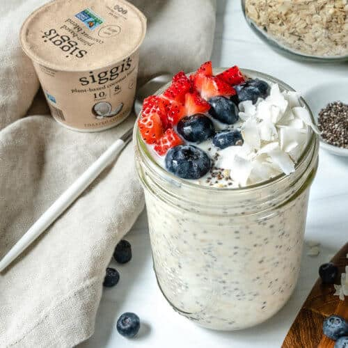

Overnight Oats

Why Overnight Oats?!
I just can't get enough of harmless
harvest plant-based coconut yogurts. I always wanted to make overnight
oats for my lunchbox while im at work. So I searched this recipe online
for this project.
Ingredients
- ¾ cup of old-fashioned oats
- 1 cup of plant-based milk
- ½ cup of harmless harvest plant-based coconut yogurt
- ¼ cup of mashed ripe banana
- 2 Tablespoons of chia seeds
- ¼ cup of chopped fruit (your choice)
How to craft the Overnight Oats
- In an airtight container, glass, or mason jar, add oats, milk, yogurt, banana, and chia seeds.
- Cover with lid or aluminum foil, and refrigerate overnight (or for 3+ hours).
- When you wake up, mix, top with chopped fruit, and enjoy chilled. No cooking or heating necessary—the oats “cook” themselves overnight.
Notes
- Mix these up right in a mason jar to take them on the go.